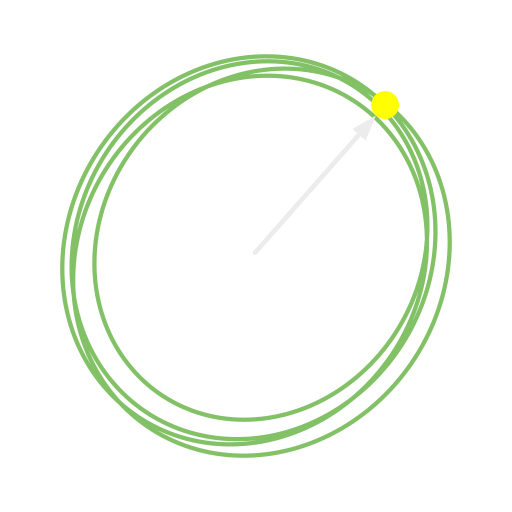
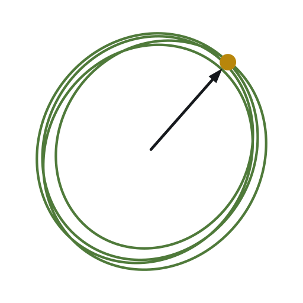
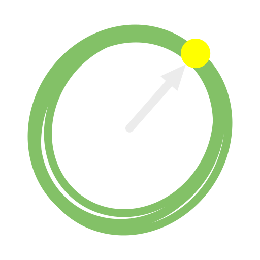
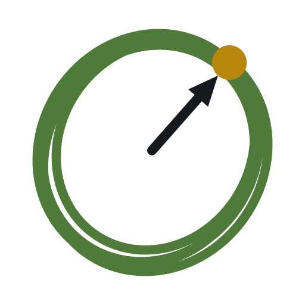
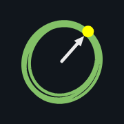
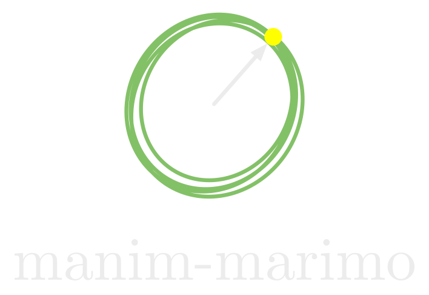
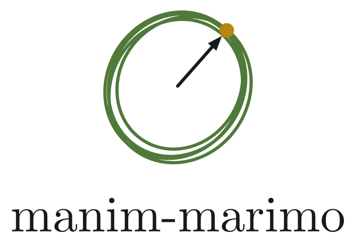
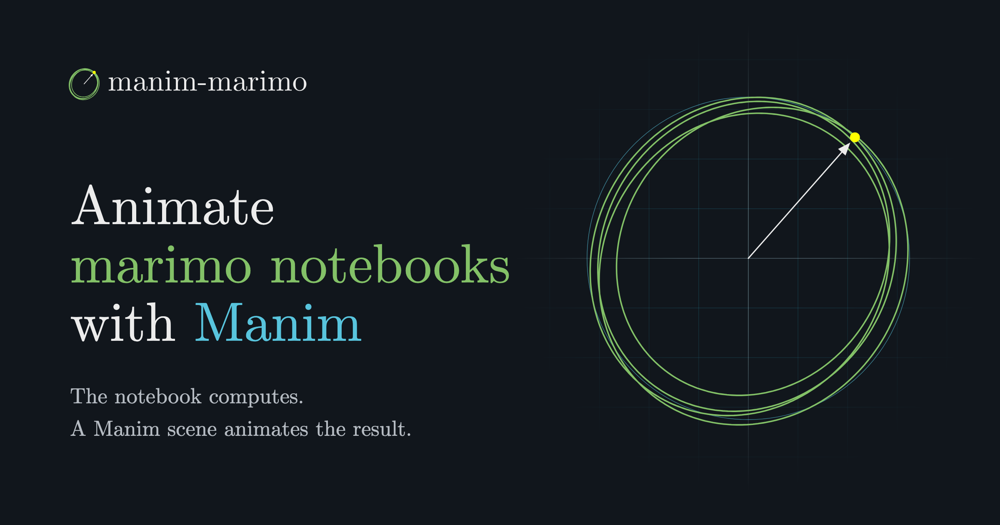

Brand board, generated by scripts/design
Brand board, generated by scripts/design
Brand board, generated by scripts/design
Brand board, generated by scripts/design







A notebook is a dataflow graphCMU Serif, for text, headings, and scenes
Guide · Examples · ReferenceCMU Bright, for navigation
value("nodes")CMU Typewriter Text, for code
